RoundBot – Assembly Guide
Overview
RoundBot is a 92 mm tall desk companion. Its face is the 1.28″ GC9A01 round display: the white bezel shows only the 33 mm active area, so the eyes you draw in firmware are the face. An ESP32-S3 SuperMini sits in the base, and its USB-C port opens through a notch low on the back, behind a removable cover.
It needs no glue and no screws. A wedge key locks the head onto the neck, and the back cap snaps in behind it. The side pieces twist-lock into the head on a sprung peg, and the band's ends hook into a slot on top of each cup. The SuperMini slides into a cradle on the base plate, and the USB cover clicks into its notch from outside. A bare template and twenty-one themes share one core, and their head accessories swap freely.
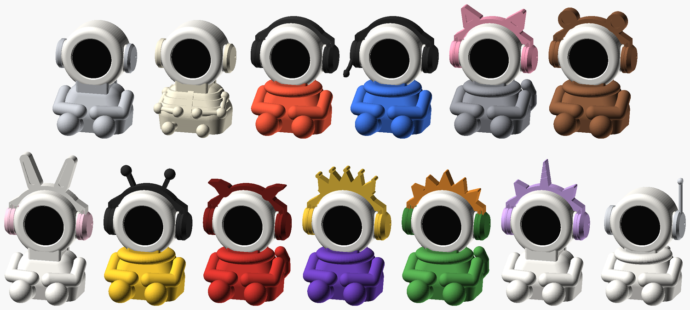
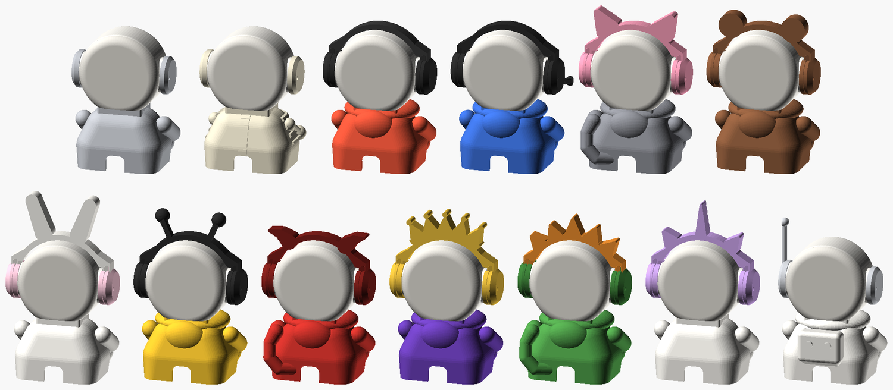
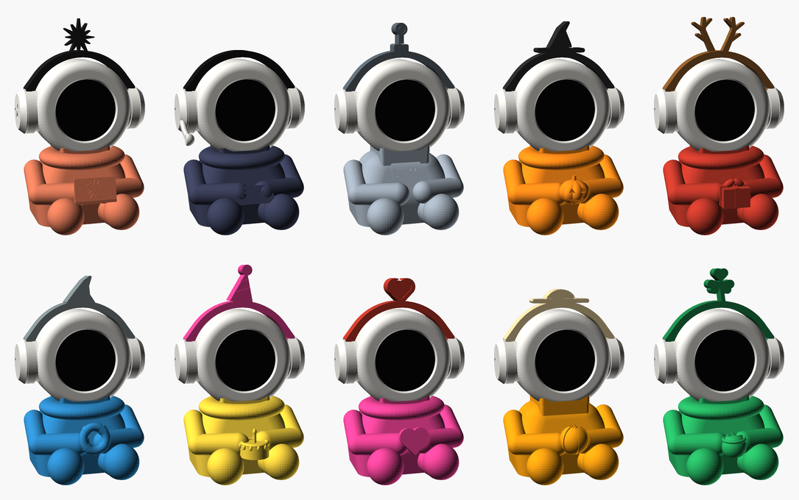
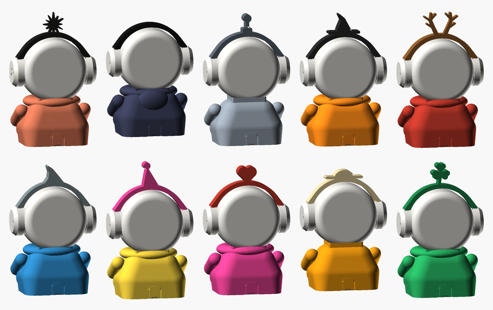
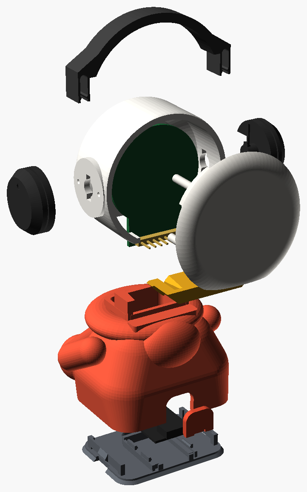
Core parts (every theme)
| File | Colour | What it does |
|---|---|---|
| core/head_shell.stl | White | Face bezel, display pocket, keyhole sockets on both sides |
| core/head_cap.stl | White | Back of head; posts clamp the display, and it closes behind the neck key |
| core/neck_key.stl | Any | Wedge that slides in behind the display and locks the head onto the neck |
| core/base.stl | Any | Bottom plate that snaps into the body, with a cradle the SuperMini slides into from the back |
| core/usb_cover.stl | Body colour | Cover that clicks into the USB-C notch from outside |
Themes
Print the core once, then one body and one set of head accessories. Bodies are in stl/bodies/,
side pieces and bands in stl/accessories/. Colours are only suggestions.
| Version | Body | Head accessories | Colour idea |
|---|---|---|---|
| Template (bare) | body_bare | plug x2 | Any single colour |
| Skeleton | body_skeleton (rib relief, bone limbs) | plug x2 | Bone white or glow-in-the-dark |
| DJ | body_hoodie | cup_left, cup_right, band_plain | Orange hoodie, black headphones |
| Gamer | body_gamer (hoodie, a game controller in both hands); body_hoodie also works | cup_mic (left), cup_right, band_plain | Navy hoodie, black headset |
| Cat | body_cat (hoodie with tail) | cup_left, cup_right, band_cat | Grey body, pink headset |
| Bear | body_hoodie | cup_left, cup_right, band_bear | Brown |
| Bunny | body_bare | cup_left, cup_right, band_bunny | White, pink cups |
| Bug | body_hoodie | cup_left, cup_right, band_bug | Yellow body, black headset |
| Devil | body_cat (the tail again) | cup_left, cup_right, band_devil | Red body, dark red horns |
| King | body_hoodie | cup_left, cup_right, band_crown | Purple body, gold crown |
| Dino | body_cat (the tail again) | cup_left, cup_right, band_dino | Green body, orange plates |
| Unicorn | body_bare | cup_left, cup_right, band_unicorn | White body, lilac headset |
| Astronaut | body_astro (suit collar, backpack) | pod_left, pod_right (antenna) | White body, silver pods |
| Claude | body_claude (open laptop on the lap, spark on the back) | cup_claude_left, cup_claude_right (spark engraved), band_claude (spark) | Coral body, cream cups, black band |
| Robot | body_robot (no collar, chest panel with a grille and two buttons) | cup_left, cup_right, band_robot (antenna) | Light grey body, dark grey band |
| Halloween | body_halloween (jack-o'-lantern) | cup_left, cup_right, band_halloween (witch hat) | Orange body, black hat |
| Christmas | body_xmas (present with a bow) | cup_left, cup_right, band_xmas (antlers) | Red body, brown antlers |
| Ocean | body_ocean (life ring) | cup_left, cup_right, band_ocean (shark fin) | Blue body, grey fin |
| Birthday | body_birthday (cake with a candle) | cup_left, cup_right, band_birthday (party hat) | Yellow body, pink hat |
| Valentine's | body_valentine (big heart) | cup_left, cup_right, band_valentine (heart) | Pink body, red heart |
| Summer | body_summer (no collar, beach ball) | cup_left, cup_right, band_summer (sun hat) | Orange body, straw-coloured hat |
| St. Patrick's | body_stpatricks (pot of gold) | cup_left, cup_right, band_stpatricks (shamrock) | Green body, dark green shamrock |
Template (bare kit)
The template is the robot with nothing themed on it: the five core parts, body_bare, and two plugs that close the keyholes on the head. One plug STL fits both sides. It works as a finished robot and as the base for your own theme.
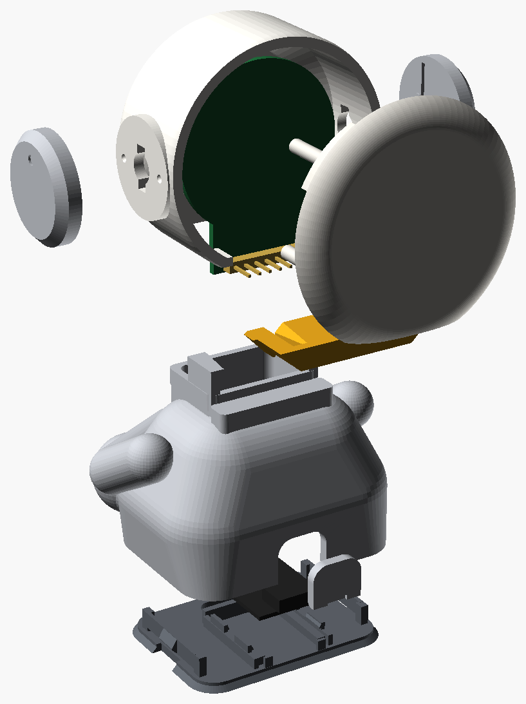
Skeleton
The skeleton body has raised ribs, a sternum and a spine on the torso, and thin bones with knobby joints for arms and legs. The electronics stay enclosed. Draw skull eyes on the display to finish it.
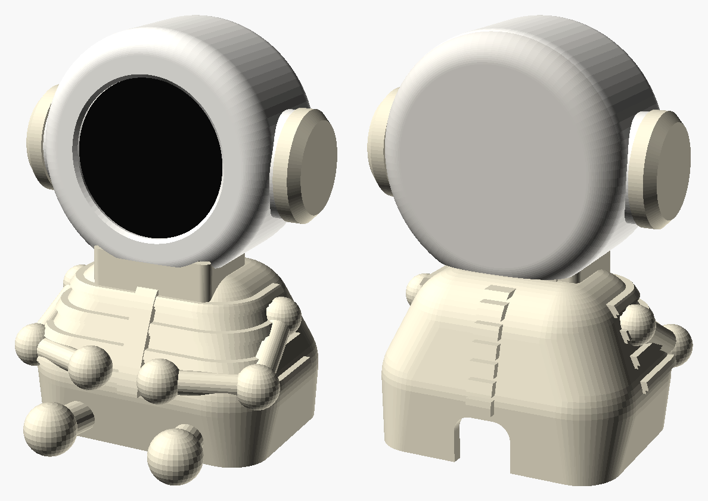
Claude
The Claude build sits with an open laptop on its lap, a spark on the lid, and a larger spark in relief on
its back. Its band carries a spark on top, and its two cups, cup_claude_left and cup_claude_right, have a
spark engraved 0.6 mm into the outer face. A coral body, cream cups and a black band match the
claude theme's animations on the screen. The cups fit like any other cup: dot up, push in,
quarter turn, then the band hooks in.
Theme bodies with something on the lap
Nine more themes follow the Claude idea: the body holds something in front of it, and the band carries a matching topper. The lap item is part of the body STL, so it prints with it. Robot and Summer have no collar so their item shows; Gamer keeps the hoodie's hood.
| Theme | On the body | On the band |
|---|---|---|
| Gamer | A game controller held up in both hands | band_plain, with cup_mic on the left |
| Robot | A chest panel with a grille and two buttons | An antenna: a ball on a stalk |
| Halloween | A jack-o'-lantern with a carved face | A witch hat with a bent tip |
| Christmas | A present with a ribbon and a bow | Reindeer antlers |
| Ocean | A life ring with rope wraps | A shark fin |
| Birthday | A cake with a candle | A party hat with a pom-pom |
| Valentine's | A big heart, held up | A heart |
| Summer | A beach ball | A sun hat with a wide brim |
| St. Patrick's | A pot of gold | A shamrock on a stem |
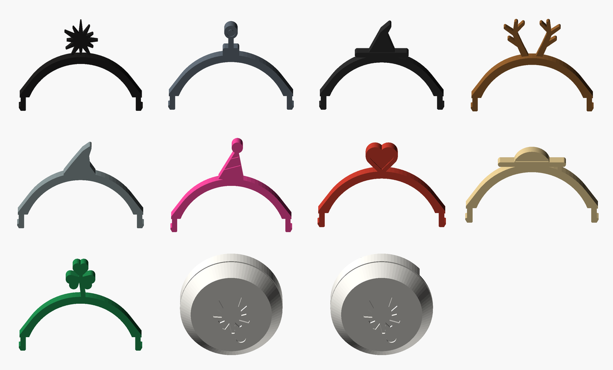
Hardware
| Item | Qty | Notes |
|---|---|---|
| GC9A01 1.28″ round TFT module (38 mm round PCB, 7-pin) | 1 | The AITEXM-style module with onboard 3.3 V LDO |
| ESP32-S3 SuperMini | 1 | 23.5 x 18 mm incl. USB-C |
| Silicone wire, 28–30 AWG, ~10 cm | 7 | Display to MCU |
| Heat-shrink, small | 7 | Insulate the solder joints on the display header |
No screws and no glue are needed: every joint is a snap, a twist-lock, a hook or a key.
Printing
The STLs are already in print orientation. Load them as-is. Only the bodies need supports.
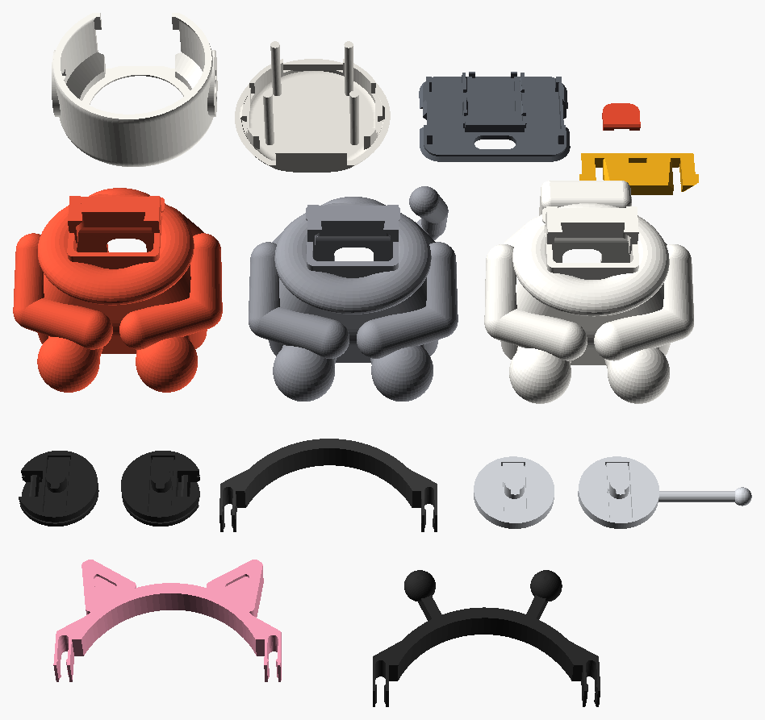
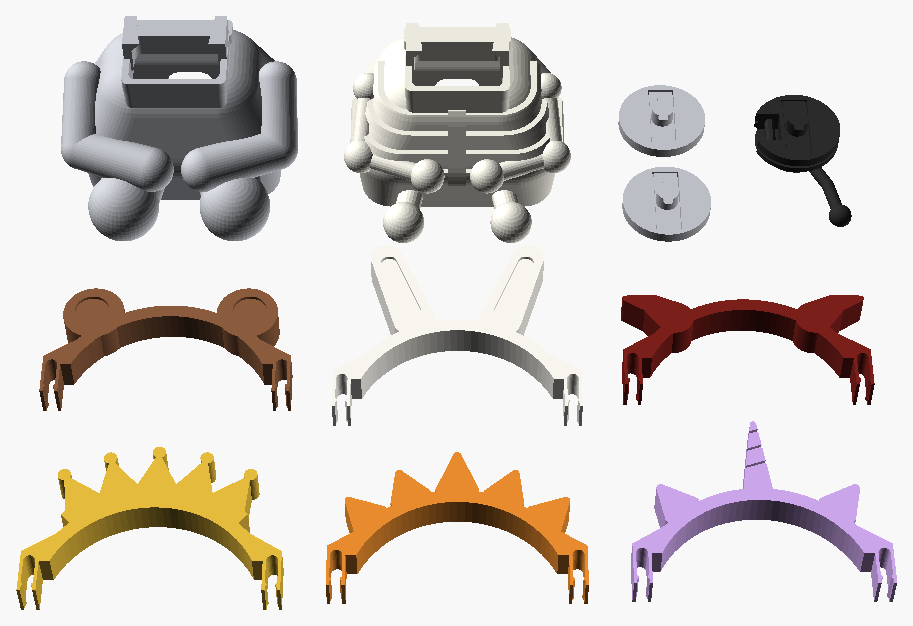
| Part | Orientation (as exported) | Supports | Notes |
|---|---|---|---|
| head_shell | Face down | None | Use 0.12–0.16 mm layers for a cleaner bezel. The side keyholes bridge 3 mm |
| head_cap | Back face down | None | Four posts stand up; print slowly or enable minimum layer time |
| neck_key | Flat, as exported | None | Small and loaded: use 4 walls or 100% infill |
| cup_left / cup_right / cup_mic / cup_claude_left / cup_claude_right | Outer face down | None | Peg and lugs point up. The spring beam under the peg (20 mm) prints as a bridge, so keep the part fan on. The band slot is open towards the head and needs no support. The mic boom lies flat on the bed. The Claude cups' spark is engraved into the face on the bed: its rays print as short gaps that the next layers close over |
| plug / pod_left / pod_right | Outer face down | None | Print the plug twice. Same 20 mm spring-beam bridge. The antenna lies flat on the bed |
| All bands | Flat, back face down | None | Ears, horns, crown, plates, hats, antennae, antlers, fins, hearts, the shamrock and the spark are part of the flat outline, and so are the two end tabs with their hooks |
| body_bare / body_hoodie / body_cat / body_astro / body_claude and the theme bodies (body_gamer … body_stpatricks) | Upright | Tree, build plate only | Supports go under the arms, legs, collar, hood bag, tail, backpack and whatever the body holds on its lap. The two neck posts and the catch ribs inside need none |
| body_skeleton | Upright | Tree, build plate only | The thin arm bones need support along their length; remove it gently |
| base | Flat, cradle up | None | The cradle's sprung fingers stand on the bed and the hooks' undersides are 45°, so there are no bridges |
| usb_cover | Outer face down | None | Only the two teeth have (45°) undersides |
Suggested settings for PLA: 0.2 mm layers, 3 walls, 15% infill, no brim. One robot is about 70 cm³ of solid model, roughly 40–55 g of filament.
Wiring
Seven wires run from the display header down the neck to the SuperMini. The GPIOs below are the S3's default FSPI pins, and all of them sit on the board's top pin row next to 5V and GND.
| Display pin | SuperMini pin | Function |
|---|---|---|
| VCC | 5V | Feeds the display's onboard 3.3 V regulator |
| GND | GND | |
| SCL | GPIO 12 | SPI clock |
| SDA | GPIO 11 | SPI MOSI (write-only, no MISO) |
| CS | GPIO 10 | Chip select |
| DC | GPIO 9 | Data / command |
| RST | GPIO 8 | Reset |
Keep the wires about 10 cm long. That is enough to solder the MCU outside the body, then fold the slack into the cavity. The backlight is hard-wired on, so no pin is needed for it.
Assembly
No glue is used anywhere. The order matters: the head goes onto the neck, then the wedge key, then the back cap, because the cap closes behind the key. Every motion below was collision-checked in CAD, so if a part binds, it is a print tolerance issue (see Fit tuning).
Step 1 — Wire the display
- Solder the seven wires straight onto the display's header pins, close to the plastic spacer. Don't use Dupont plugs: they're too long for the neck.
- Slide heat-shrink over each joint and let the wires hang straight down from the tab. Keep them at or below the pin row: the neck key later slides in just above it.
- Check the back of the round PCB at the 45° diagonals, 17 mm from centre. The four cap posts press there. If a tall component sits under one, snip that post shorter.
Step 2 — Slide the display into the head
- Hold the head shell face down. Feed the display in from the open back, glass first.
- The tab and its wires drop through the slot in the head's floor as the display slides forward.
- Push until the glass sits flat against the bezel lip, with the tab pointing straight down.
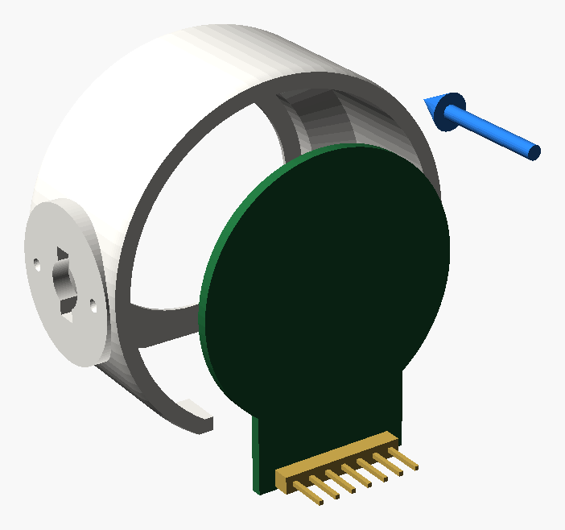
Step 3 — Seat the head on the neck
- Feed the seven wires down through the square neck opening until they come out of the open bottom of the body.
- Lower the head shell, with the display inside and the cap still off, onto the neck.
- The two posts on top of the neck come up through the socket in the head's floor, one on each side, behind the display. The head now rests on the neck's top at the front and on the flat rest block behind the neck. It still lifts off freely: the key in the next step is what locks it.
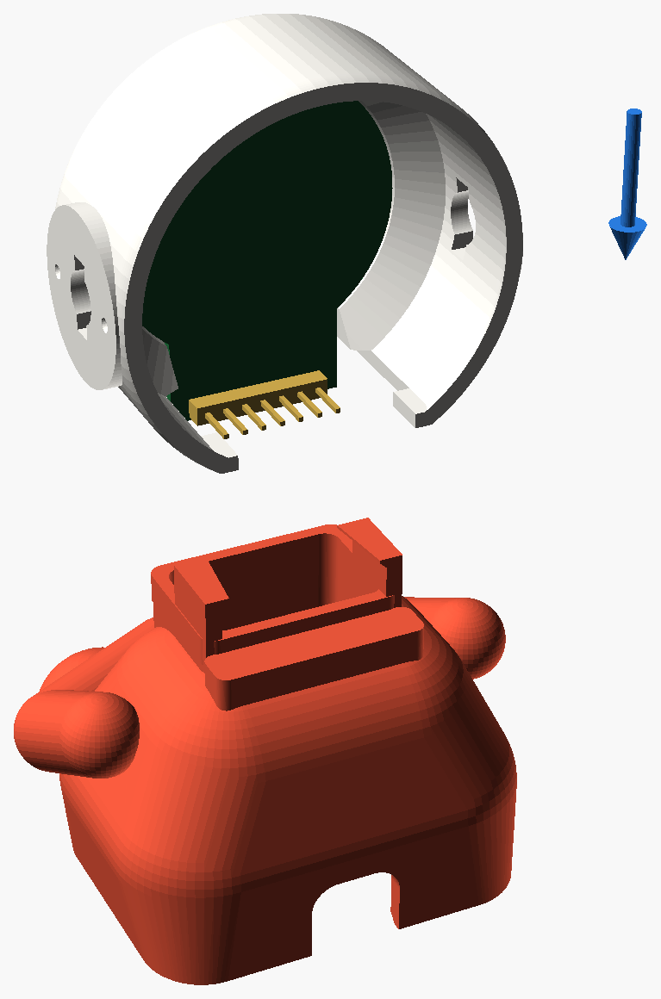
Step 4 — Lock the head with the wedge key
- Hold the key flat, forked end first, and feed it into the open back of the head along the floor.
- The wide middle tongue goes between the two neck posts, and the two outer prongs pass outside them. Let the forked end ride over the rim of the opening: it has to sit about 1 mm high there, then it drops down inside.
- Push the key forward with a fingertip until it stops firmly. Its bevelled edges run under the ribs on the posts. The ribs get deeper towards the front, so the last millimetres pull the neck up into the head and clamp the head onto its rests. The head should now have no play at all.
- To release it later, hook a small screwdriver into the slot in the key and pull it straight back.
The key normally stops with its back edge 0–4 mm inside the rim of the opening. If it goes in until it touches the posts and the head is still loose, or it goes tight while its back edge is still outside the rim, see Fit tuning.
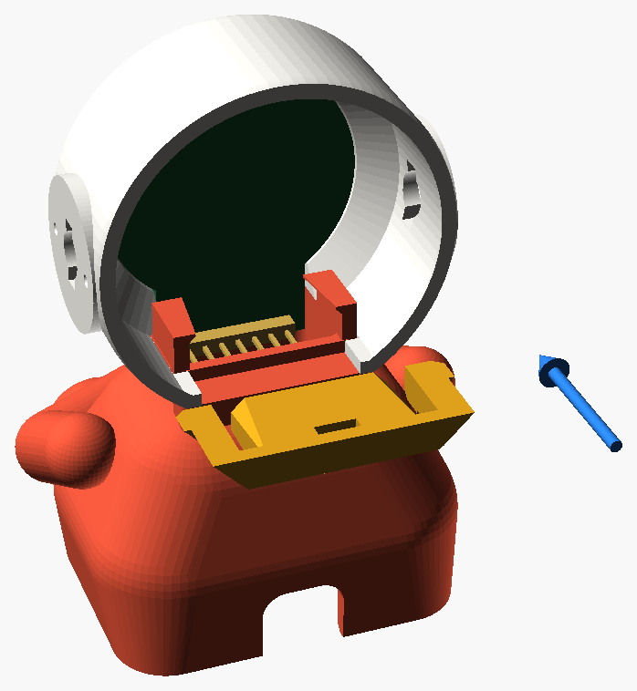
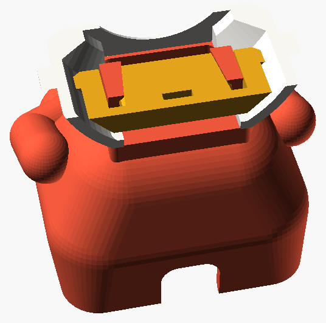
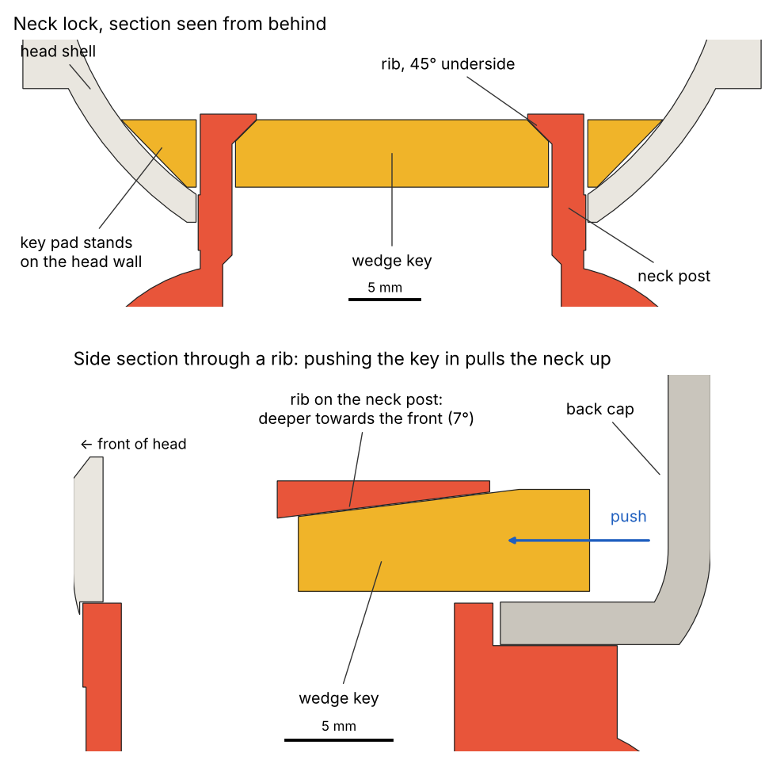
Step 5 — Close the back cap
- Press the back cap straight in from behind until the three teeth on its rim click in behind the lip of the shell opening.
- The four posts clamp the display against the bezel. A block at the bottom of the cap sits right behind the key, so the key cannot work its way out while the cap is on.
- To take the head off later: pull the cap firmly straight back, draw the key out, then lift the head.
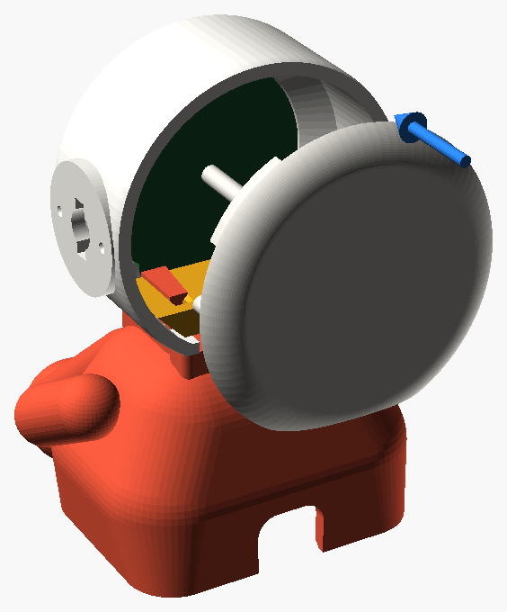
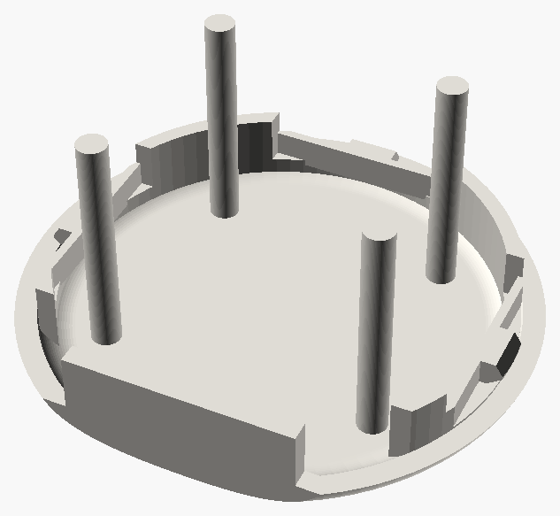
Step 6 — Twist-lock the side pieces, hook on the band
- Every side piece has a small dot on its outer face. Hold the piece so the dot points up, and push its peg into the keyhole on the side of the head until the piece sits flat against the head.
- Twist it a quarter turn so the dot moves to the back: a cup until its band slot faces up, a pod until its antenna points up. The twist is firm from the start. The peg stands on a spring beam, and turning it winds the two lugs in behind the wall, so the piece ends up pulled tight against the head.
- Do the same on the other side. Then hold the band over the head and set its two ends into the slots on top of the cups. Each end is a flat tab with a hook on its tip. Press both ends down until the hooks click in at the bottom of the slots. The band itself is the spring: it flexes in while the hooks pass.
- The band now also stops the cups from turning back. Pulling on the band does not unhook it, because the catch is nearly flat. To take it off, push one end in towards the head and lift it out of its slot, then do the other end.
- Plugs (Template, Skeleton) have no fixed angle: dot up, push in, quarter turn either way.
- Gamer theme: the mic cup goes on the robot's left. Claude theme: the engraved cups are a left and a right one, with the spark facing out.
The dot matters because the head's inner wall is curved. The lug on the dot side is the tight one and must travel through the upper half of the keyhole; the other lug is cut 0.24 mm deeper to clear the lower half.
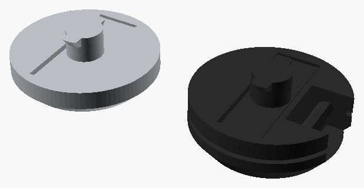
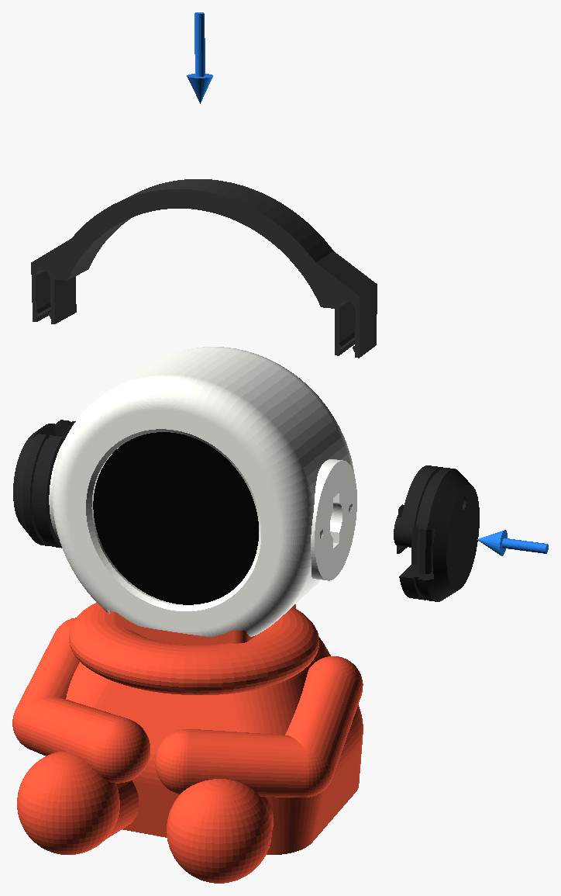
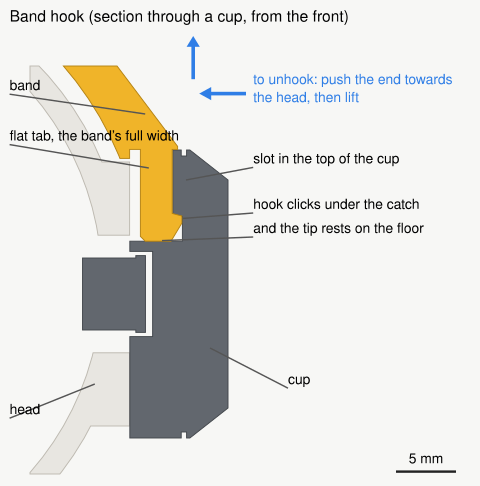
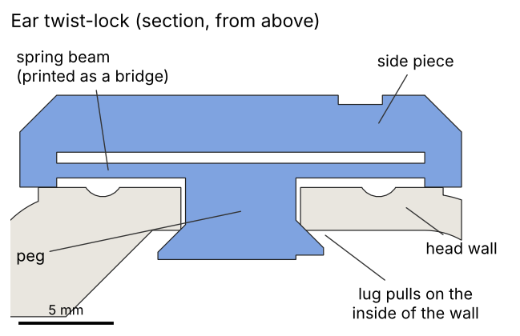
Left: the band's end in its cup, cut through the middle. Right: the twist-lock, seen from above.
Step 7 — Mount the SuperMini
- Solder the wires to the SuperMini (see Wiring), from the top side of the board. The cradle only touches the board's end faces and the outer 0.7 mm of its long edges, so every pin stays free.
- Slide the board into the cradle on the base plate from the back: components up, antenna end first, so the USB-C port ends up at the open end. Its long edges run in a groove on each side, under a 45° roof, so it cannot lift out.
- Push until it stops against the front stop, which takes the push when you plug a cable in. The sprung fingers at the back snap in behind the board's corners and hold it when you unplug. To take the board out, spread the fingers and slide it back.
- If your board is thicker than 1.0 mm and won't slide in, set
mcu_tto your board's thickness and reprint the base.
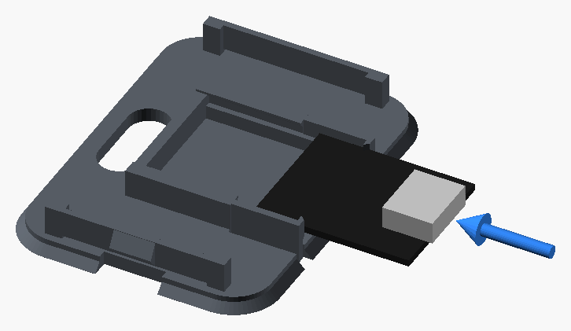
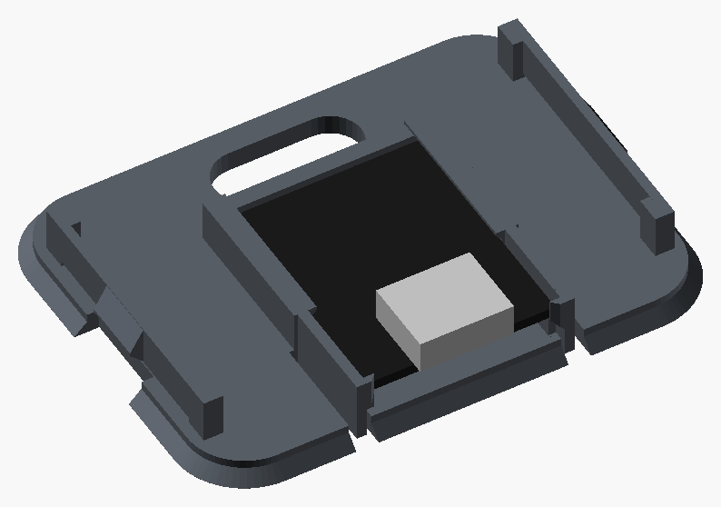
Step 8 — Close the base
- Fold the wire slack into the body. Push the base plate up from below, with the USB-C end toward the back of the robot.
- The receptacle slides up through the open-bottom notch in the back wall. The plate's sloped edge seats in the matching cone in the body rim, flush with the bottom.
- Press until the two side teeth click over the ribs inside the body. The snap beams stay slightly bent, so the plate is pulled up into its seat and does not rattle. To open it again, hook a fingertip or a small tool in the pull slot and pull the plate straight down.
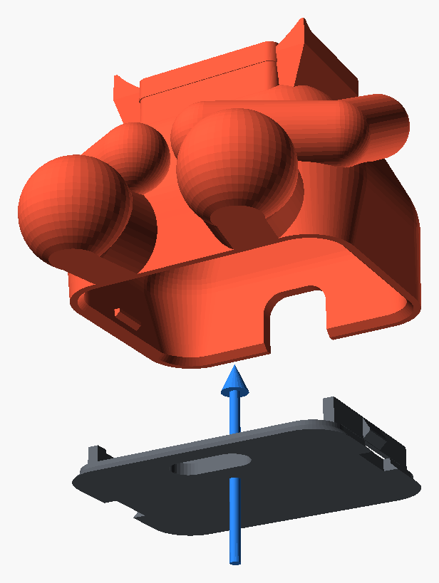
Step 9 — Finish
- Plug a USB-C cable in through the notch on the lower back and flash the test sketch below.
- Whenever no cable is connected, press the USB cover into the notch from outside, after the base plate is in. It clicks in: a spring strip on each side has a tooth that catches behind the wall beside the notch. To take it out, pull at the nail slot in its bottom edge.
- To change theme, unhook the band (push each end in towards the head and lift), twist the side pieces back a quarter turn and pull them off, then fit another set.
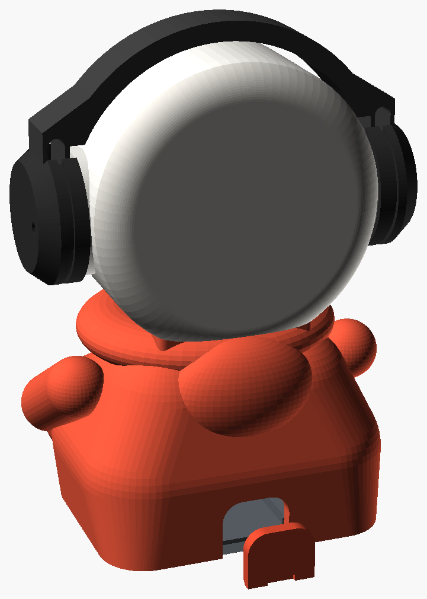
First power-up
The sketch below draws two happy amber eyes and blinks every few seconds. If you see them, the wiring is right. It uses the Arduino_GFX library (moononournation), installed from the Arduino Library Manager. Select board "ESP32S3 Dev Module" with "USB CDC On Boot: Enabled".
#include <Arduino_GFX_Library.h>
// DC, CS, SCK, MOSI, MISO
Arduino_DataBus *bus = new Arduino_ESP32SPI(9, 10, 12, 11, GFX_NOT_DEFINED);
// RST, rotation, IPS panel
Arduino_GFX *gfx = new Arduino_GC9A01(bus, 8, 0, true);
const uint16_t AMBER = 0xFD20, BG = 0x0000;
void eyes(bool open) {
gfx->fillRect(40, 70, 160, 60, BG);
for (int x : {82, 158}) {
if (open) gfx->fillArc(x, 120, 32, 22, 180, 360, AMBER); // ^ ^
else gfx->fillRect(x - 32, 112, 64, 8, AMBER); // - -
}
}
void setup() {
gfx->begin(40000000); // 40 MHz SPI
gfx->fillScreen(BG);
eyes(true);
}
void loop() {
delay(random(2500, 5000));
eyes(false); delay(120);
eyes(true);
}
If the screen stays black, check RST and CS first. If the image is mirrored or the colours are inverted,
change the rotation or the IPS flag in the constructor. The desk buddy firmware in hardware/ uses
the same pins.
Fit tuning
All fits come from parameters at the top of round_bot.scad. Change one, set part
to the piece you need, and export again with F6 then F7 in OpenSCAD.
If the head shell still slides off the cap, raise snap_bite from 0.42 to 0.55 mm and reprint the
cap. If the cap is too hard to push in, lower it to 0.3 mm.
| Symptom | Parameter | Default | Change |
|---|---|---|---|
| Back cap too tight / loose | spigot_clr | 0.15 mm | Raise / lower in 0.05 steps |
| Display rattles, or cap won't seat | post_gap | 0.2 mm | Lower to clamp harder / raise to relieve |
| Display doesn't drop into the pocket | clr | 0.3 mm | Raise to 0.4 (also loosens neck and plate) |
| Black circle off-centre in the bezel | screen_off_z | 0 mm | + moves the window up |
| Side piece still has play when locked | ear_tension | 0.15 mm | Raise to 0.25 |
| Side piece is too stiff to twist, or its spring beam cracks | ear_tension | 0.15 mm | Lower to 0.05, or set beam_t to 0.6 for a softer spring |
| Side piece jams as the twist starts, dot side up | lug_relief | 0.24 mm | Raise to 0.35 |
| Band is too hard to take off | btab_catch | 15° | Raise to 20: above about 17° a firm pull unhooks it |
| Band hook won't click in, or the band is very stiff to press on | btab_hook | 0.8 mm | Lower to 0.6. It cannot go higher than 0.1 mm below the 0.9 mm gap between the tab and the head |
| Band end is tight in its slot | btab_clr | 0.05 mm | Raise to 0.1 (btab_clr_y, 0.08 mm, is the same at the front and back) |
| Band rattles on the cups | btab_pre | 0.1 mm | Raise to 0.2 |
| SuperMini won't slide in / is loose | mcu_t, mcu_clr | 1.0 mm, 0.1 mm | Set mcu_t to your measured PCB thickness; raise mcu_clr to 0.15 if it is still tight |
| SuperMini comes out with the cable | mcu_hook | 0.6 mm | Raise to 0.8 |
| Cable plug won't reach the port | usb_w, usb_h | 12.5 x 7.5 mm | Widen for chunky cable overmolds |
| USB cover falls out / is too hard to press in | ucv_bite | 0.3 mm | Raise to 0.4 / lower to 0.2 |
Head and base fit. The first two rows need only the small key reprinted:
| Symptom | Parameter | Default | Change |
|---|---|---|---|
| Key goes in until it touches the posts and the head is still loose | key_fat | 0 mm | Set to 0.15. Each 0.1 makes the key go tight 0.8 mm earlier |
| Key goes tight too early: its back edge stays outside the rim and the cap won't close | key_fat | 0 mm | Set to -0.15 |
| Head rocks front to back even with the key tight | neck_plug | 1.95 mm | Raise to 2.05 so the neck top reaches the socket ceiling (reprint the body) |
| Neck plug too tight / loose in the head socket | neck_fit | 0.15 mm | Lower / raise in 0.05 steps (reprint the body) |
| Base plate drops out / too hard to click in | base_bite | 0.5 mm | Raise to 0.65 / lower to 0.35 |
| Base plate rattles sideways / won't enter | base_clr | 0.12 mm | Lower to 0.08 / raise to 0.2 |
| Base plate moves up and down when clicked in | base_play | -0.3 mm | Lower to -0.4: the snap beams stay bent further and pull the plate up harder |
Make your own theme
Start from the template and change only the accessories; the core never needs reprinting. In
round_bot.scad, copy one of these modules and edit its outline. Every band needs the two cups,
because the cups hold its ends.
| To add | Start from | Interface to keep |
|---|---|---|
| A side piece (ears, horns, bolts) | plug() | Keep ear_lock(): the peg, its two lugs and the spring beam. Cut ear_cut() from your shape so the beam is free to move. Stay outside 26.3 mm from the head axis so it can twist |
| A headband topper | topper_2d() | Draw a flat outline above the band (radius 31 mm). It is extruded to the 9 mm band width and prints flat. Leave the band's end tabs alone: their hooks are what hold it on the cups |
| A body | body("bare") | Add shapes to the union. Keep the neck, neck_posts(), the rest block, the cavity and the USB notch |
| Something on the lap | lap_item() | Add a module and a line for your style in lap_item(), then add the name to body_themes (body_<name>), band_themes if it has a topper (band_<name>), and theme_col for the preview colours. assembly_<name> previews the whole robot |